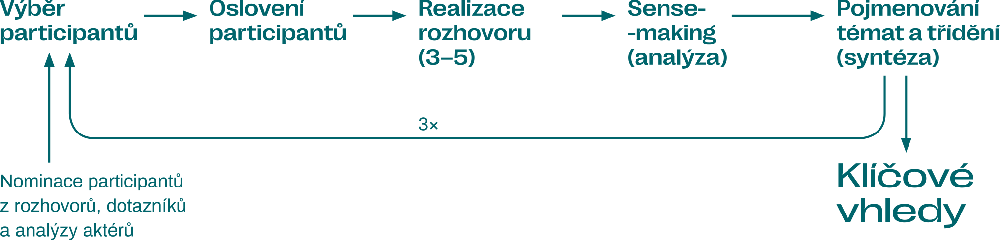

Metody, postupy a kontext výzkumu
Možná vás zajímá, jak jsme na všechno, co je v této knížce napsané, přišli. Odpovědi na otázky týkající se metodologie výzkumu najdete všechny pohromadě v této kapitole. Přiblížíme vám, jak jsme si definovali, co chceme zkoumat, a jaké metody jsme používali. Také se dozvíte, kde a jak na výzkum Klimavize můžete navázat vy.
Designový proces a trojitý diamant
Výzkum, který jsme v rámci procesu Klimavize dělali, není akademický, a nepřinášíme vám tedy vědeckými postupy ověřené výstupy. Používali jsme metody tzv. designového procesu, se kterým máme dobrou zkušenost a který umožňuje pružně prozkoumávat situaci a objevovat velké příležitosti. Využívá se hlavně pro vytváření inovací. Prostřednictvím expertních znalostí a literatury jsme se dívali na situaci venku kolem nás, ale důležitou roli hrál také pohled dovnitř klimatického hnutí, jeho participace na výzkumu a zpětná vazba.
Model designového procesu, s nímž jsme pracovali, je tzv. trojitý diamant1. Probíhají v rámci něj třikrát za sebou fáze rozbíhavého myšlení (sběr dat, vymýšlení možných cest, hromadění nápadů) a sbíhavého myšlení (klasifikace sebraných dat, prioritizace, vyhodnocování, vybírání vhodných řešení). Na začátku designového procesu leží nějaká výzva, kterou chceme zdolat. Prostřednictvím designových metod vhodně zvolených pro danou část procesu pak dochází k postupnému mapování situace, k definici konkrétních problémů, k návrhům jejich řešení a k realizaci těchto řešení. Na konci designového procesu tedy ideálně dojde alespoň k částečnému zdolání původní výzvy. Pro Klimavizi bylo výzvou hledání nových smysluplných cílů a zajímavých spojenců pro klimatické hnutí.
V rámci první fáze designového procesu – prvního diamantu – jsme se snažili zorientovat v prostředí klimatického hnutí a definovat si, co přesně chceme objevovat. Formovali jsme svůj výzkumný záměr.
Druhou fázi designového procesu – druhý diamant – pak představoval výzkum samotný. Prozkoumávali jsme společenskou a politickou dynamiku klimatické krize v Česku a také to, jak si klimatické hnutí vytváří své strategie. Sebraná data jsme analyzovali a nakonec jsme definovali výstupy výzkumu, které můžete najít v této publikaci.
Třetí fáze designového procesu – třetí diamant – je na vás. Jak je to možné? Třetí fáze totiž spočívá v hledání možných řešení problémů, které jsou definované ve výstupech našeho výzkumu. Ať už jste součástí nějaké organizace klimatického hnutí, veřejné instituce či firmy, nebo jste novinář, politička či vědkyně, jen na vás záleží, jakým způsobem navážete na naši práci. Přečtěte si proto jednotlivé kapitoly Klimavize, vyberte si, jakým problémům se chcete věnovat, a zkoušejte pro ně hledat řešení. Držíme vám palce!
První fáze – co jsme objevovali a proč
Klimatické hnutí dosáhlo celé řady úspěchů. Navzdory tomu se však klimatická krize dále prohlubuje a my cítíme potřebu hledat nové cíle, jež budou účinně klimatickou krizi řešit. Chtěli jsme vytvořit projekt, který bude mít smysl a pomůže klimatické hnutí posunout dál. Proto jsme v první fázi hlavně přemýšleli, tápali, třídili si myšlenky a následně i plánovali. Fáze prvního diamantu se uskutečnila mezi lednem a červnem 2021.
Formování výzkumu Klimavize
Při slaďování vlastních představ a očekávání nám pomohl workshop Wardleyho map2 s Janem Řezáčem z designového studia House of Řezáč. Kromě sdílení představ, co by mělo být cílem Klimavize, jsme se mohli rozběhnout do šířky a prozkoumat, o jak široké oblasti se vlastně bavíme. Zmapovali jsme si, jaká témata se aktuálně změn klimatu týkají, jak jsou propojena i jak se o nich ve společnosti mluví. Wardleyho mapy nám daly první pohled na rozmanitost témat, problémů, konceptů i typů společenského chování a jejich vzájemné provázanosti. Pomohly nám tak usadit představy o potenciální šíři výzkumu.
Na Wardleyho mapu jsme navázali mapováním aktérů, tedy těch, koho se jednotlivé problémy týkají a kdo se jim věnuje. Získali jsme tak úvodní přehled potenciálních spojenců klimatického hnutí a participantů našeho výzkumu.
Rozmanitost témat i lidí jsme potřebovali pevněji ukotvit, abychom nezkoumali všechno a všechny. Přizvali jsme proto do procesu Romana Hřebeckého z designového studia Pábení, který nám pomohl se zarámováním projektu pomocí nástroje Lean Canvas3. Díky tomu jsme si ujasnili, co jako Klimavize chceme do ekosystému českého klimatického hnutí přinášet:
- Vytváříme podporu pro strategické myšlení v (širším) klimatickém hnutí.
- Dáváme podklady a vstupy i těm, kteří je nyní nemají.
- Objevujeme příležitosti, kde hledat nové spojence.
Záměr a cíle výzkumu
Díky nástroji Lean Canvas a pojmenování toho, co má Klimavize přinést, jsme mohli začít definovat perspektivu, z níž budeme příležitosti pro klimatické hnutí zkoumat. Pomohlo nám následující schéma, které zjednodušeně ilustruje strategické myšlení.
- Co? témata a problémy, do kterých se klimatická změna propisuje a které trápí Českou republiku
- Jak? jak klimatické hnutí daná témata řeší, co používá za nástroje, jakou má roli
- Kam? stav, ke kterému se organizace/hnutí svými aktivitami snaží přibližovat – ať už je pojmenovaný, nebo jen na úrovni sdíleného předporozumění
Pokud si tento rámec chcete představit velmi konkrétně, tak si za Co? můžete dosadit obnovitelné zdroje energie, za Jak? sdružení starostek lobbující za zákon o komunitní energetice a za Kam? udržitelnou a energeticky nezávislou obec (jako dlouhodobou vizi) s dílčím cílem prosazení zmiňovaného zákona.
Do schématu jsme zasadili prvky prostředí českého klimatického hnutí a jasně jsme viděli, že oblastí, které by si zasloužily pro účely strategie zkoumat, je mnoho. Zároveň jsme vnímali, že samotné klimatické hnutí věnuje velkou část své vlastní strategické a expertní práce v rámci konkrétních témat. Proto jsme viděli potřebu prozkoumat spíše abstraktnější a komplexnější dynamiky, které utvářejí společenskou diskuzi a politické rozhodování v kontextu klimatické krize. Také jsme začali pracovat s konceptem systémového myšlení a pákových bodů, o nichž více píšeme v této kapitole v části Práce s literaturou a také v kapitole Jak dosáhnout systémové změny.
Prakticky to znamenalo, že jsme se při odhalování témat a oblastí, kterým je potřeba se věnovat při řešení klimatické krize, zaměřili na vztahy, příčiny a modely chování v obecnější systémové rovině. Druhou linkou pak pro nás byla snaha porozumět tomu, jak v klimatickém hnutí vznikají strategie a jak se s nimi pracuje.
Tento přístup nepřináší jednoznačný návod, kam má klimatické hnutí upínat síly. Přináší obecnější perspektivu, která je podstatná pro plánování konkrétních cílů organizací i jednotlivců a na základě níž bude možné vymýšlet nová dílčí řešení. Výstupy Klimavize tedy přinesou podklad pro strategické myšlení v klimatickém hnutí v širokém slova smyslu4. Výzkumný záměr jsme specifikovali v pěti dílčích cílech:
Cíle výzkumu
- Odhalit témata a oblasti, jež souvisejí s klimatickou krizí či prosazováním klimatických politik a mají velký vliv.
- Zjistit, jak se tato témata a oblasti prolínají a zda jsou součástí podobných systémových dynamik.
- Nastínit ideální stav, ke kterému bychom měli v identifikovaných tématech a oblastech směřovat.
- Pojmenovat způsoby, jak klimatické politiky efektivně prosazovat.
- Připravit podklady, na základě nichž budou moci aktéři klimatického hnutí strategicky plánovat své další kroky.
Kontext a omezení výzkumu Klimavize
Samotný výzkum jsme realizovali od června do listopadu 2021. Jedná se tedy o období volební kampaně a voleb do Poslanecké sněmovny, blížícího se předsednictví České republiky v Radě Evropské unie, ale také pokračující pandemie covidu-19 a v závěru i skokového zdražení energií. Tyto události v některých případech nezbytně ovlivnily odpovědi účastníků a účastnic výzkumu, a proto v datech z logických důvodů rezonují, ačkoli jsme výzkum tímto směrem aktivně necílili. Neznamená to ale, že informace týkající se těchto témat nejsou pro náš výzkum relevantní. Nicméně je třeba počítat s tím, že některé z příležitostí vycházejících z těchto témat už nemusejí být po nějaké době pro tvorbu strategií aktuální.
Výše jsme se snažili popsat, o co se výzkum Klimavize snaží a z jakých důvodů. Určitě je však namístě zmínit také to, co cílem výzkumu není a k čemu sloužit nemůže. Výstupy mají sloužit jako podklady pro tvorbu strategií, nelze je tedy považovat za strategii samotnou. Abychom vám s procesem tvorby vlastní strategie trochu pomohli, v následující kapitole Jak na vlastní strategii se dozvíte více o tom, jak můžete na Klimavizi navázat svou vlastní prací.
Samozřejmě ani výčet témat a oblastí, jež popisujeme jako podstatné pro řešení klimatické krize, není vyčerpávající. Rozsah i hloubka výzkumu měly své limity také v kapacitách, které jsme jim mohli věnovat. Abyste se mohli informovaně rozhodnout, jakým přínosem pro vás výstupy Klimavize mohou být, rozhodli jsme se právě v této kapitole dopodrobna a transparentně popsat kompletní proces vzniku publikace.
Při konkrétním popisu jednotlivých použitých metod vždy zmiňujeme jejich omezení. Je důležité také vzít na vědomí, že celý výzkum byl kvalitativní a nelze jej považovat za absolutní pravdu ani vztahovat na jiné situace. V jednotlivých kapitolách popisujeme společnost a tematické oblasti tak, jak je popisovali participanti a participantky, a přinášíme vám pohled na realitu, který vychází z jejich vlastní odbornosti, životních zkušeností a působení v klimatickém hnutí. Je na vás, abyste vyhodnotili, nakolik jsou pro vás tyto interpretace přínosné a inspirativní.
Podstatné je také to, že text publikace nereprezentuje názorovou shodu všech participantů a participantek. To znamená, že jednotliví respondenti a respondentky nemusejí souhlasit se vším, co z výzkumu vyplynulo. Jde o kompilát výpovědí lidí různých odborností, jejichž názory se v některých místech protínaly, ale v něčem si občas protiřečí. Takové rozpory v textu přiznáváme.
Při návrhu a realizaci výzkumu pro nás bylo důležité, abychom zapojovali různé aktéry v různé momenty, a tím podpořili platnost a spolehlivost tohoto výzkumu. K tomu jsme využili tři techniky:
- rozmanitost výzkumných metod
- zapojení samotného klimatického hnutí do výzkumu
- pravidelný sběr zpětné vazby na dílčí výstupy a směřování výzkumu
Druhá fáze – jak jsme sbírali, analyzovali a vyhodnocovali data
Celý výzkum Klimavize jsme vzhledem k různorodým cílům rozčlenili do tří částí, které se vzájemně ovlivňovaly a propojovaly. Ústřední částí výzkumu pro nás byla práce s experty a expertkami napříč různými obory a odbornostmi. Druhou část výzkumu tvořilo porozumění perspektivám uvnitř klimatického hnutí. Třetí část nám poskytla teoretický základ pro vyhodnocování dat i doplnění kontextu z odborné literatury.
V této kapitole naleznete podrobný popis toho, co jsme zjišťovali, jak jsme postupovali, s kým jsme mluvili i jak jsme přistupovali k vyhodnocení. Zkrátka vše, co ovlivnilo výslednou podobu publikace.
1. Spolupráce s experty a expertkami
Jádrem výzkumu pro nás bylo hledání příležitostí a témat, která jsou aktuálně ve vztahu ke klimatické změně důležitá. Naším cílem nebylo prozkoumat jednotlivá témata a problémy do detailu (např. věnovat se dopodrobna konkrétním resortním politikám), ale spíše najít důležité dynamiky a vztahy na systémové úrovni. K tomuto záměru jsme zvolili metodu hloubkových polostrukturovaných rozhovorů s experty a expertkami.

Jak jsme postupovali
Celý průběh sběru, analýzy a vyhodnocení dat probíhal ve čtyřech opakováních. Tento postup nám umožnil postupné rozkrývání tematických oblastí, ale také doplňování slepých míst.
S kým jsme mluvili
Do rozhovorů se zapojilo celkem devatenáct lidí napříč různými obory souvisejícími s klimatickou krizí. Výběr lidí pro hloubkové rozhovory vycházel ze tří zdrojů a lišil se podle úrovně našeho poznávání v průběhu výzkumu:
- V úvodní fázi výzkumu jsme volili participanty, kteří měli obecný vhled do politiky a socioekonomických vztahů ve spojitosti se změnami klimatu. Nominace těchto participantů vycházela z úvodního mapování aktérů a rozhodujícím faktorem pro výběr byl právě přesah do různých oblastí a témat. V této fázi jsme tedy mluvili například s novinářkou, politikem nebo politologem.
- V dalších fázích výzkumu jsme pro rozhovory volili lidi podle oblastí, které jsme potřebovali rozšířit či doplnit. Vycházeli jsme z doporučení samotných participantů a také z dotazníku šířeného v rámci klimatického hnutí (viz níže).
Přehled participantů a participantek ve výzkumu
- BcA. Michal Berg
- politik, spolupředseda Zelených, člen předsednictva Evropské strany zelených, zastupitel Vsetína
- prof. PhDr. Ing. Ondřej Císař, Ph.D.
- sociolog a politolog působící na Institutu sociologických studií Karlovy univerzity, vědecký pracovník Sociologického ústavu Akademie věd ČR a šéfredaktor Sociologického časopisu; zkoumá sociální hnutí
- Mgr. Eva Fraňková, Ph.D.
- ekologická ekonomka, odborná asistentka na Katedře environmentálních studií Masarykovy univerzity; věnuje se souvislostem fungování ekonomiky a přírody
- Mgr. Zuzana Harmáčková, Ph.D.
- výzkumnice v oblasti vědy o udržitelnosti, vědecká pracovnice v Oddělení společenského rozměru globální změny Ústavu výzkumu globální změny Akademie věd ČR a ve Stockholm Resilience Centre; zabývá se výzkumem scénářů budoucího vývoje
- Mgr. Hedvika Koďousková, Ph.D.
- výzkumnice a lektorka na Katedře mezinárodních vztahů a evropských studií Fakulty sociálních studií Masarykovy univerzity, expertka na oblast energetiky s důrazem na energetickou chudobu a energetickou zranitelnost
- Mgr. Petra Kolínská
- pracuje pro Zelený kruh, kde mj. vede projekt Měníme klima v legislativě; bývalá komunální politička v Praze za Stranu zelených, se zaměřením na územní rozvoj, dopravu a transparentnost veřejné správy; také pracovala ve Státním fondu životního prostředí
- RNDr. Jiří Koželouh
- expert na energetiku, vedoucí programu Klima, energie a odpady v Hnutí DUHA; je bývalým členem Uhelné komise, poradního orgánu vlády pro konec uhlí v ČR
- Mgr. Lukáš Lehotský, Ph.D.
- politolog, odborný asistent na Katedře mezinárodních vztahů a evropských studií Fakulty sociálních studií Masarykovy univerzity; zabývá se tématem odchodu ČR od uhlí, sociálním rozměrem energetické transformace a energetickou chudobou
- Mgr. Lukáš Likavčan, Ph.D.
- filozof působící na Filmové a televizní fakultě Akademie múzických umění v Praze a ve Strelka Institute for Media, Architecture and Design; zkoumá technologie, ekologii a vizuální kulturu
- prof. Dr. Julia Mildorfová Leventon
- environmentální sociální vědkyně, vedoucí Oddělení společenského rozměru globální změny Ústavu výzkumu globální změny Akademie věd ČR; zabývá se transformací systémů v kontextu udržitelnosti
- Ing. Ivan Obrusník, DrSc.
- předseda Českého národního výboru pro omezování následků katastrof, bývalý ředitel Českého hydrometeorologického ústavu
- Mgr. Vojtěch Pelikán, Ph.D.
- environmentální antropolog, odborný asistent na Katedře environmentálních studií Fakulty sociálních studií Masarykovy univerzity; věnuje se tématu vnímání změn klimatu v kontextu stárnutí, environmentálním souvislostem restitučního procesu a ekologicky příznivým způsobům života
- PhDr. Martin Polášek, Ph.D.
- analytik Odboru politiky životního prostředí a udržitelného rozvoje na Ministerstvu životního prostředí ČR; specializuje se na téma vládnutí a inovace v tvorbě politik
- PhDr. Vladimír Špidla
- politik, bývalý předseda vlády České republiky, bývalý ministr práce a sociálních věcí, bývalý evropský komisař pro zaměstnanost, sociální věci a rovné příležitosti, člen ČSSD
- Mgr. Lucie Trlifajová
- antropoložka a analytička sociálních politik; působí v Sociologickém ústavu Akademie věd ČR a v Centru pro společenské otázky SPOT; zaměřuje se na problematiku chudoby a sociálních nerovností, prekarizace, dluhů a jejich dopadů na občanství; je spoluautorkou výpočtu minimální důstojné mzdy pro ČR
- Mgr. Zuzana Vlasatá
- novinářka v Deníku Referendum, environmentalistka; zabývá se tématem oligarchizace české politiky
- Bc. Kristina Zindulková
- spolupracovnice Výzkumného centra Asociace pro mezinárodní otázky, kde se věnuje projektům z oblasti dekarbonizace a spravedlivé transformace uhelných regionů
- anonymní politoložka
- anonymní ekonomka
Metoda hloubkových rozhovorů
Hloubkové polostrukturované rozhovory jsou kvalitativní metodou, která slouží k pojmenování postojů, názorů a pohledů na danou problematiku. Z výsledků nelze vyvozovat zobecnitelné závěry na celou problematiku, spíše přinášejí vlastní (novou) perspektivu experta či expertky opřenou o odbornost či zkušenosti vztahující se k ústřednímu tématu klimatické krize.
V rozhovorech jsme se zaměřili na několik oblastí:
- klíčová témata související se změnami klimatu (z hlediska odbornosti participantů)
- chybějící klimatické politiky či klimatické aktivity
- příležitosti a hrozby spojené s klimatickou změnou
- pojmenování aktérů a spojenců
- specifické otázky zohledňující odbornost či profesi participantů
S výjimkou dvou se všechny rozhovory uskutečnily online (60–90 minut). Se souhlasem participantů jsme setkání nahrávali, abychom je mohli následně přepsat a dále s nimi pracovat. Dvě respondentky se rozhodly zůstat v anonymitě.
Analýza a syntéza
sebraných dat
Sesbíraná data z rozhovorů jsme analyzovali průběžně a opakovaně – vždy v okamžiku, kdy jsme měli připravené přepisy nahrávek ze tří až pěti setkání. Pro analýzu jsme využívali tzv. sense–making, který je v mnohém podobný akademické metodě zakotvené teorie, ale přizpůsobený výzkumu v rámci designového procesu.
V prvním kroku analýzy jsme rozebrali přepisy několika rozhovorů na jednotlivá sdělení či myšlenky, které jsme opoznámkovali. Následně jsme v těchto myšlenkách napříč rozhovory hledali společná a opakující se témata a vzorce, jež jsme shlukovali do tematických celků – pokračovali jsme tedy syntézou sebraných dat. Každý nově vzniklý shluk sdělení a myšlenek jsme pojmenovali a detailně jsme popsali, o čem pojednává.
V syntéze jsme dále pokračovali tak, že jsme shluky sdělení a myšlenek umístili do tabulky podle témat, kterých se týkaly, a také podle systémové úrovně, na níž se odehrávaly. K tomu jsme využívali tzv. ledovec, model systémového myšlení, který dále popisujeme v části Práce s literaturou. Díky této tabulce jsme v průběhu celého výzkumu jasně viděli, že při rozhovorech nezůstáváme u popisování dílčích problémů a politik, ale dostáváme se k hlubším systémovým dynamikám, jejichž objevování odpovídalo našemu výzkumnému záměru.
Ve chvíli, kdy jsme měli hotových dalších přibližně pět rozhovorů, jsme vždy opakovali fázi analýzy nových rozhovorů na jednotlivá sdělení a myšlenky. Po kategorizaci těchto nových dat do shluků jsme shluky sdělení a myšlenek opět přesunuli do tabulky s ledovcem a umístili je podle jejich systémové úrovně a tématu k datům z předchozích rozhovorů.
Vyhodnocení
Na základě dat kategorizovaných do shluků a modelu ledovce jsme určili šest klíčových tematických oblastí, kterým je potřeba se věnovat při řešení klimatické krize. Tyto tematické oblasti zároveň tvoří i strukturu publikace. V každé z oblastí jsme kromě hlavních dynamik a myšlenek identifikovali také konkrétní tipy pro klimatické hnutí – komunikační rady, příležitosti a hrozby.
Myšlenky specificky věnované klimatickému hnutí a jeho strategiím jsme z klíčových oblastí pro řešení klimatické krize vyčlenili a zařadili jsme je vedle dat sebraných při spolupráci s klimatickým hutím. Rozhodli jsme se tomuto tématu, které směřuje spíše „dovnitř“, věnovat zvláštní kapitolu Klimatické hnutí a jeho strategie.
2. Spolupráce s klimatickým hnutím
Druhá část výzkumu spočívala v zapojení členů a členek klimatického hnutí, a to hned v několika úrovních. Zjišťovali jsme, jaká témata se v jednotlivých organizacích a hnutích řeší a co považují za důležité. Současně jsme sledovali, jak se klimatické hnutí staví k dlouhodobému plánování svých cílů. Také jsme pro zvýšení dopadu a užitečnosti výzkumu pravidelně sbírali zpětnou vazbu na výslednou podobu výstupů Klimavize a zpracování publikace. V neposlední řadě jsme uspořádali dva webináře se zahraničními hnutími, abychom do českého kontextu přinesli příklady dobré praxe odjinud.
Kontext z pohledu klimatického hnutí
Pro získání základního vhledu do interního fungování klimatického hnutí jsme použili metodu dotazníku s otevřenými otázkami. Jde tedy o kvalitativní metodu a výsledky neukazují žádná statisticky významná data, pouze pohled těch, kteří nám na otázky odpovídali.
Zajímaly nás především názory jednotlivých členů a členek napříč českým hnutím na následující otázky:
- Co jsou největší příležitosti pro prosazování klimatických politik?
- Čemu se v hnutí chcete věnovat (z dlouhodobé i krátkodobé perspektivy)?
- Jak aktuálně hodnotíte fungování svého hnutí či organizace?
- Jakým tématům aktuálně hnutí nevěnuje dostatečnou pozornost?
- Jaké nám pro zapojení do výzkumu doporučujete experty a expertky?
Dotazník jsme rozeslali prostřednictvím e-mailové databáze Klimatické koalice a zveřejnili jsme jej ve facebookové skupině Proti změnám klimatu, za klimatickou spravedlnost! a na webové stránce Klimavize. Získali jsme celkem 36 odpovědí od členů a členek z 29 organizací. Podařilo se nám oslovit poměrně různorodou paletu organizací a hnutí, přesto nelze z odpovědí v dotazníku usuzovat na žádný „trend“. Sbírali jsme kvalitativní data, která ukazují subjektivní názory 36 jedinců, a takto je s nimi potřeba nakládat.
Při vyhodnocení dotazníků jsme sebraná data prolnuli s tématy, jež vyplynula z rozhovorů s experty a expertkami. Díky tomu jsme si mohli udělat přehled, zda se někdo v klimatickém hnutí aktuálně tématům věnuje a jestli tato témata rezonují. Také jsme díky dotazníkům identifikovali příležitosti, které klimatické hnutí vidí, ale v rozhovorech se nám zatím neobjevily. Na základě toho jsme upravili výběr dalších participantů a participantek. Důležité pro nás byly také informace o strategickém plánování v konkrétních organizacích, které jsme využili při tvorbě podkladů pro další fáze výzkumu. S výstupy z dotazníků částečně pracujeme rovněž v kapitole Strategická spojenectví.
Plánování strategických cílů v klimatickém hnutí
Abychom dokázali vytvořit tuto publikaci jako podklad pro strategické myšlení, potřebovali jsme získat hlubší vhled do toho, jak si aktuálně klimatická hnutí stanovují své cíle. Uspořádali jsme proto online focus group, kde jsme o tématu diskutovali společně se zástupkyněmi a zástupci osmi organizací klimatického hnutí. Focus group je kvalitativní výzkumná metoda a její přínos spočívá v tom, že je díky ní možné získat data od většího množství participantů a participantek najednou, a to s přidanou hodnotou jejich vzájemné interakce.5
Do focus group jsme se snažili zapojit menší i větší organizace, abychom pokryli širší spektrum klimatického hnutí. Diskuze trvala tři hodiny a zúčastnili se jí: Barbora Urbanová (Centrum pro dopravu a energetiku, Klimatická koalice), Jana Pravdová (Greenpeace), Ondřej Pašek (Hnutí DUHA), Anna Kšírová (Rodiče za klima Liberec, Doctors for Future), Vít Řezáč (Fridays for Future), Zdeňka Brožová (Chebsko za klima), Žofie Hobzíková (Extinction Rebellion) a anonymní zástupkyně hnutí Limity jsme my.
Nejdříve jsme při debatě hodnotili aktuální situaci klimatického hnutí jako celku a řešili jsme, jakou roli v hnutí mají jednotlivé organizace, případně jaké role chybějí. Následovalo sdílení zkušeností s procesy tvorby strategií a ptali jsme se, co organizacím pomáhá, či co je naopak brzdí. Jinými slovy, v rámci focus group jsme se snažili identifikovat potřeby, které klimatické hnutí má, když se snaží vymyslet, čemu se bude věnovat.
Výstupy z focus group opět nelze generalizovat a vztáhnout na další organizace. Ale díky sdílení zkušeností se strategickým plánováním přímo od lidí z organizací jsme získali důležitý vhled do klimatického hnutí. Díky němu jsme mohli lépe formovat výslednou podobu výzkumu Klimavize i případných návazných aktivit. S výstupy z focus group pracujeme hlavně v kapitole Klimatické hnutí a jeho strategie a částečně i v kapitole Strategická spojenectví.
Ověření výstupů Klimavize a zpětná vazba
Předběžnou podobu a formu výstupů Klimavize jsme ověřovali prostřednictvím validačních rozhovorů se dvěma zástupkyněmi organizací klimatického hnutí (Veronika Dombrovská z hnutí Limity jsme my a Anna Kšírová z iniciativy Rodiče za klima Liberec a Doctors for Future). Organizace jsme zvolili na základě výstupů z focus group, ve kterých se projevilo, že zmíněné organizace právě procházejí procesem strategického plánování a využívají nebo by využily další podklady.
V rámci rozhovoru nás zajímalo, v jaké fázi procesu plánování se aktuálně obě organizace nacházejí, s čím se potýkají, ale také jak by jim mohl právě výzkum Klimavize pomoci. Podněty a připomínky z rozhovorů jsme zohlednili při tvorbě výstupu.
Při procesu tvorby samotného výstupu jsme předběžné výsledky prezentovali ještě zástupcům a zástupkyním různých organizací klimatického hnutí při validačním online workshopu. S většinou zúčastněných jsme byli v kontaktu již dříve – jednalo se o participanty a participantky focus group či dotazníkového šetření.
Online workshop sloužil ke skupinové debatě a sbírání zpětné vazby na plánovanou podobu výstupu. Zajímalo nás, jakou by měl mít výstup Klimavize formu a jaké potřeby mají ti, jimž by měly výsledky výzkumu sloužit. Nechtěli jsme totiž vydat další publikaci, která bude lidem ležet na poličce či kterou si v lepším případě někdo přečte a už s ní dále nebude pracovat.
Zpětnou vazbu ze strany klimatického hnutí jsme využívali také při procesu samotného psaní publikace. Kromě vzájemné spolupráce šestičlenného autorského týmu Klimavize jsme zapracovali poznámky a komentáře dalších šesti lidí z klimatického hnutí.
Inspirace zahraničním klimatickým hnutím
Při tvorbě strategických cílů může klimatickému hnutí pomoci také impulz ze zahraničí. Rozhodli jsme se proto vést strategický dialog s klimatickým hnutím v USA a Německu, abychom zjistili, jak to dělají jinde.
Uspořádali jsme dva veřejné webináře, jejichž první polovina byla věnovaná panelové diskuzi s lidmi ze zahraničních organizací a druhá část sloužila k diskuzi a reflexi témat v rámci českého klimatického hnutí. V debatách jsme se zaměřili na struktury zahraničních hnutí, způsoby strategických plánování a sdílení zkušeností.
Za americké klimatické hnutí Sunrise s námi diskutovaly Molly Morabito a Ava Mohsenin, z Německa s námi vedli dialog Daniel Hofinger z AusgeCO2hlt a Antje van Broock, ředitelka organizace BUND – Friends of the Earth Germany. Výstupy z diskuze najdete v kapitole Zahraniční inspirace.
3. Práce s literaturou
Literaturu jsme v procesu Klimavize používali primárně pro teoretické ukotvení výzkumu. Dále jsme při analýze sebraných dat využívali externí zdroje také pro zasazení našich zjištění do širšího kontextu a pokrytí slepých míst v datech. V některých částech publikace na další literaturu také přímo odkazujeme, protože bychom vám rádi dali možnost věnovat se tématům hlouběji a poskytnout vám další nástroje. Využíváme k tomu i zdroje, které vytvořila jiná hnutí, organizace či projekty.
Výzkum Klimavize jsme teoreticky ukotvili prostřednictvím tzv. systémového myšlení, jehož přední průkopnicí v minulém století byla ekoložka, vědkyně a spoluautorka knihy Meze růstu Donella Meadows6. Vycházeli jsme zejména z jejího modelu pákových bodů pro intervenci do systémů, který se zabývá fungováním systémů, jeho součástmi a vrstvami, vzájemnými vztahy vrstev a také tím, jak je možné do systémů zasahovat a měnit je. Pákové body pak jsou taková místa v komplexním systému, jejichž posunutí zapříčiní velké změny ve fungování celé úrovně systému. Čím větší pákový efekt tyto změny mají, tím hlouběji v systému působí.7

Pracovali jsme se zjednodušenou verzí tohoto modelu, s tzv. modelem ledovce. Ten realitu rozvrstvuje do čtyř úrovní: pozorovatelných jevů (událostí), pod jejichž hladinou se vynořují statisticky zachytitelné vzorce (trendy), které jsou samy výrazem uspořádání struktur (institucí a režimů), jejichž nastavení úzce souvisí s mentálními modely (hodnotami a předpoklady).8
Systémové myšlení nás vedlo k tomu, abychom nezůstávali u řešení pozorovatelného chování systémů. Šli jsme hlouběji a snažili se hledat také potřebné změny větších celků (vzorce, struktury, mentální modely), z nichž se chování systému (jako špička ledovce) vynořuje. Platí totiž, že čím hlouběji jdeme, tím větší „pákový efekt“ na systém můžeme očekávat.9
Teoretické ukotvení, které jsme pro výzkum Klimavize zvolili, nám umožnilo prozkoumat, co se děje pod pozorovatelnou „hladinou“ lidské společnosti, politiky i ekonomiky. V modelu ledovce tak mimo jiné i vám nabízíme praktický nástroj, který můžete využívat k analýze klimatické krize a s ní souvisejících problémů při svém strategickém plánování. Tomu, proč je nutné při řešení klimatické krize měnit i hlubší struktury společnosti, se věnujeme v kapitole Jak dosáhnout systémové změny.
Třetí fáze – hledání a realizace jednotlivých řešení klimatické krize
V předchozích částech této kapitoly jsme vám popsali první dva diamanty z metody trojitého diamantu – tedy první dvě fáze designového procesu, podle kterého jsme postupovali. V první fázi jsme si definovali, co budeme v rámci Klimavize objevovat a proč. V druhé fázi jsme sbírali, analyzovali a vyhodnocovali data. Třetí fáze navazuje na výstupy Klimavize a spočívá v hledání a realizaci řešení problémů, které v publikaci popisujeme.
Tato část práce už je na vás samotných, tedy na klimatickém hnutí. Vy teď můžete Klimavizi použít jako podklad pro své strategické plánování, při kterém vymyslíte, na jaké problémy se chcete zaměřit a jakým způsobem vám dává smysl bojovat proti klimatické krizi. Možná vás Klimavize inspiruje k hlubšímu strategickému myšlení. A třeba se vám podaří vytvořit prostor, v němž bude mít klimatické hnutí možnost o svých strategiích diskutovat a možná je i společně koordinovat.
Cítíte se teď, jako bychom vás hodili do vody? Pak jsme právě pro vás sepsali následující kapitolu Jak na vlastní strategii jako malý návod k použití Klimavize. Dozvíte se v ní praktické základy toho, jakým způsobem je možné na náš výzkum navázat.
STICKDORN, Marc, Markus Edgar HORMESS, Adam LAWRENCE a Jakob SCHNEIDER. This Is Service Design Doing: Applying Service Design Thinking in the Real World. ↩︎
PLÍŠEK, Jan. Funkce Wardleyho mapování pro inovace v organizacích [online]. ↩︎
Lean Canvas. Dostupné z: 100metod.cz. ↩︎
O tom, koho vnímáme jako součást klimatického hnutí v širším slova smyslu, píšeme více v kapitole Klimatické hnutí a jeho strategie. ↩︎
Focus groups. Dostupné z: cs.wikipedia.org. ↩︎
Viz její kniha: MEADOWS, Donella H.
Thinking in Systems: A Primer. ↩︎MEADOWS, Donella. Leverage Points:
Places to Intervene in a System. ↩︎Viz například: Iceberg Model. Dostupné z: www.systemsinnovation.io. ↩︎
K problematice práce s komplexními systémy viz také: MEADOWS, Donella. Dancing With Systems. ↩︎